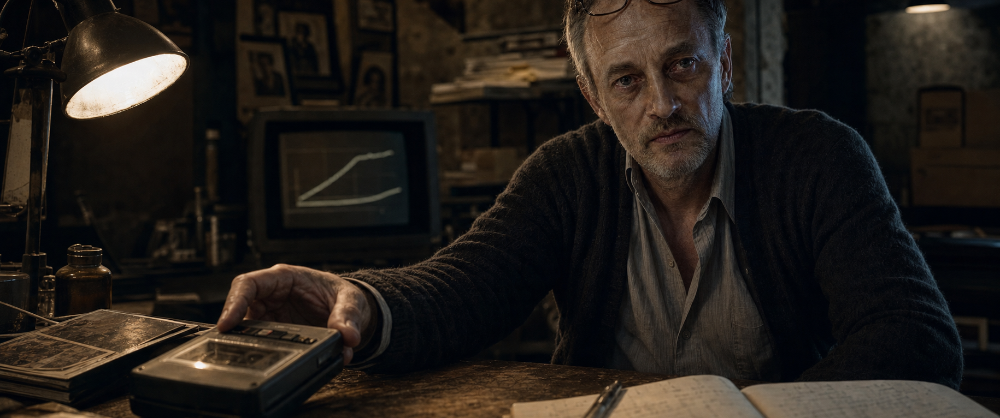
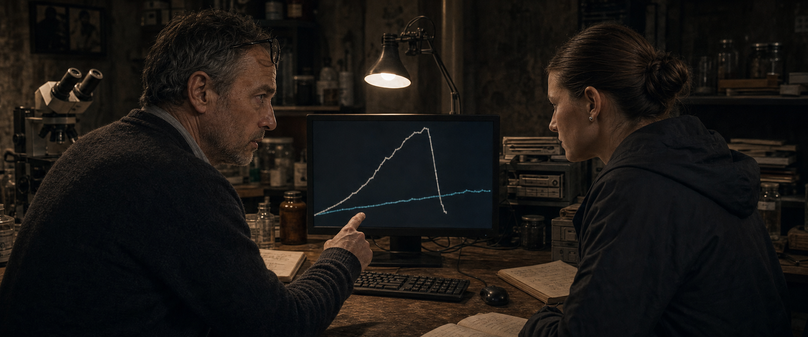
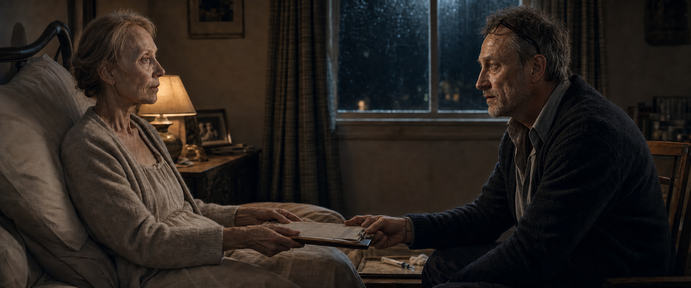
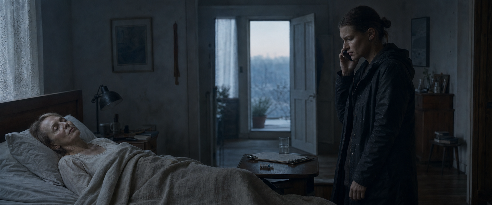
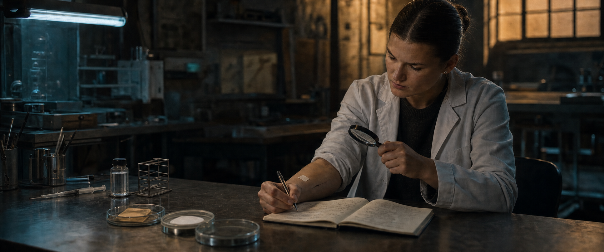

Das Geständnis
Prolog
0. INT. KELLERLABOR — NACHT

Nah: eine Kassette. Die Spulen drehen sich. Staub im warmen Licht einer Schreibtischlampe.
RICHARD sitzt am Tisch. Anfang fünfzig, übernächtigt, Zigarette in der einen Hand, Mikrofon in der anderen. Hinter ihm: Mikroskop, Zellkulturen, handbeschriftete Röhrchen. Ein Hobbykeller, der bereits kein Hobby mehr ist.
Er drückt AUFNAHME.
RICHARD
Tagebuch. Eintrag siebenundvierzig. Reihe vierzehn.
Er sieht zu zwei Kurven auf dem Monitor.
RICHARD
Der Marker fällt. Danach kippt die Probe. Nicht weil es nicht wirkt. Weil es zu schnell wirkt.
Er hustet. Raucherhusten.
RICHARD
Acht Zehntel brauchen Minuten. Sechs Zehntel brauchen Tage. Eva hat vielleicht keine Tage mehr.
Beat.
RICHARD
Irgendwo zwischen Wirkung und Kontrolle liegt eine Zahl, die sie überlebt.
Er beschriftet die Kassette: EINTRAG 47 — REIHE 14. Im Karton daneben: eine ganze Chronik.
RICHARD
Ich finde sie.
Die Spulen stoppen.
SCHNITT AUF SCHWARZ. Titel: INFECTED ORIGINS.
Eine Grenze wird versprochen
I — Liebe
1. INT. HAUS VOSS — KÜCHE — NACHT

Eine kleine, warme Küche. Alte Heizung. Holztablett mit Tassen. Kühlschrankbrummen. Auf dem Tisch: Medikamente, ein aufgeschlagenes Buch und ein gerahmtes Foto von EVA und NORA am Meer.
EVA sitzt im Hausmantel am Tisch. Sehr dünn. Wach, obwohl ihr Körper schlafen will.
NORA kommt herein. Regennasse Jacke, Labortasche, eine Mappe der Universität unter dem Arm.
EVA
Du solltest in Heidelberg sein.
NORA
Mein Postdoc läuft nicht weg.
EVA
Menschen schon.
Nora räumt Einkäufe ein. Eva betrachtet die Universitätsmappe.
EVA
Noch ein Brief?
NORA
Eine Fristverlängerung.
EVA
Wegen mir.
NORA
Wegen uns.
Eva lässt das gelten. Nora stellt sich hinter sie und legt eine Hand auf ihre Schulter. Eva deckt sie mit ihrer ab.
EVA
Wo ist er?
NORA
Keller.
Beat.
EVA
Nora Lilith Voss.
NORA
Nur du benutzt den ganzen Namen.
EVA
Weil Lilith entschieden hat, wer sie sein will.
NORA
Die Geschichte kenne ich.
EVA
Dann vergiss den wichtigen Teil nicht.
Eva dreht sich zu ihr.
EVA
Dein Vater darf versuchen, mich zu retten. Ich will, dass er es versucht. Aber niemand darf dafür bezahlen außer mir.
NORA
Hat er etwas getan?
EVA
Noch nicht.
Sie sieht zur Kellertür.
EVA
Er braucht eine Grenze, bevor er sie nicht mehr erkennt.
2. INT. KELLERLABOR — SPÄTER

RICHARD vor dem Monitor. Daneben die Kaffeetasse „Papas Weltbeste Tochter“, ungelenke Kinderhandschrift.
Nora stellt einen Teller ab und setzt sich. Auf dem Bildschirm: zwei Kurven.
A0,8 — MARKERABFALL: 18 MIN — GEFÄSSREAKTION: STEIGEND
A0,6 — MARKERABFALL: 41 STD — GEFÄSSREAKTION: PLATEAU
NORA
Du hast acht Zehntel als Zielwert markiert.
RICHARD
Als Arbeitshypothese.
NORA
Es repariert schnell und repliziert danach weiter. Sechs Zehntel bleibt unter der Schwelle zur systemischen Überlastung.
RICHARD
Und wirkt frühestens übermorgen.
NORA
Übermorgen ist besser als tot.
RICHARD
Nicht, wenn sie morgen stirbt.
Stille.
Nora ändert die Markierung von A0,8 auf A0,6. Die Kurve wird flacher, länger — aber stabil.
NORA
Das ist nicht der schwächere Weg. Nur der langsamere.
Richard betrachtet die Kurve. Dann sie.
RICHARD
Du siehst den Fehler immer vor mir.
NORA
Dann hör früher zu.
Ein müdes, echtes Lächeln zwischen ihnen. Er nimmt den Teller.
3. INT. UNIVERSITÄT — KONFERENZRAUM — TAG
Neonlicht. Fünf PRÜFENDE. Richard am Whiteboard. Nora sitzt hinten mit den Unterlagen, nicht als Tochter, sondern als Wissenschaftlerin.
PRÜFERIN
A0,6 erreicht den therapeutischen Schwellenwert nicht reproduzierbar. A0,8 erreicht ihn und tötet anschließend das Modell.
PRÜFER
Zusätzlich haben Sie bei A0,8 eine sekundäre Replikation außerhalb des Zielgewebes.
RICHARD
Die lässt sich begrenzen.
PRÜFERIN
Dann begrenzen Sie sie. In weiteren Modellen. Nicht in Ihrer Frau.
RICHARD
Bis diese Modelle abgeschlossen sind, ist meine Frau tot.
PRÜFERIN
Genau deshalb dürfen Sie diese Entscheidung nicht treffen.
Sie schließt die Akte.
PRÜFERIN
Der In-vivo-Antrag wird abgelehnt. Die Förderung endet heute.
Nora sieht Richard an. Er sieht nicht zurück.
4. INT. HAUS VOSS — SCHLAFZIMMER — NACHT
Eva im Bett. Richard sitzt angezogen neben ihr.
EVA
Sind sie Feiglinge oder haben sie recht?
RICHARD
Beides kann gleichzeitig wahr sein.
EVA
Was kann es?
Richard zwingt sich zur Präzision.
RICHARD
Es repariert geschädigtes Gewebe. Wirklich. Bei acht Zehnteln zu schnell. Bei sechs vielleicht zu langsam für dich.
EVA
Und Menschen?
RICHARD
Keine.
EVA
Dann hör mir zu. Ich will nicht, dass eine Kommission für mich stirbt. Ich will auch nicht, dass jemand anderes für mich stirbt.
Sie nimmt seine Hand.
EVA
Mein Körper. Meine Entscheidung. Kein anderer.
RICHARD
Versprochen.
Sie weiß, dass er das Versprechen braucht. Noch glaubt sie, es reiche.
5. INT. CAFÉ — TAG
KESSLER sitzt Richard gegenüber. Dunkler Mantel, ruhige Hände, ein Exemplar von Richards ungekürztem Paper.
KESSLER
Einundzwanzig Tage. Labor, Biobank, Personal. Danach brauche ich einen humanen Wirkhinweis.
RICHARD
Keine Menschen ohne Einwilligung.
KESSLER
Sie machen die Medizin. Ich beschaffe Ihnen Zeit.
RICHARD
Was bekommt GenetiX?
KESSLER
Exklusivität. Schweigen. Ergebnisse.
RICHARD
Und wenn es scheitert?
KESSLER
Dann scheitert mein Bereich mit Ihnen.
Kessler schiebt eine Karte über den Tisch.
KESSLER
Die Universität schützt ihr Verfahren. Ich schütze Ihre Frist.
Richard öffnet auf dem Handy das Meerfoto von Eva und Nora. Er sieht es lange an.
Dann nimmt er die Karte.
Aus Hoffnung wird ein Verfahren
II — Korruption
6. INT. GENETIX / HAUS VOSS — TAGE — MONTAGE
Helles Licht. Noch fühlt es sich wie Rettung an.
— Nora erhält einen Ausweis: DR. N. VOSS — MOLEKULARBIOLOGIE.
— Richard und Nora arbeiten Kopf an Kopf am Mikroskop. A0,6 bleibt in einer Zellkultur lokal.
— DR. SUSAN prüft mit Maske und Tablet klinische Abläufe. LIA richtet in weißer Pflegeuniform sterile Tabletts her.
— FRANK unterschreibt an einer Rezeption für eine bezahlte Studie. Ein Armband: F-94,2. Er erhält einen Umschlag mit Geld.
— Eva geht allein von ihrem Bett bis in die Küche. Nur wenige Schritte. Für die Familie ist es ein Wunder.
— Eine Nachricht von Eva auf Noras Handy: „Heute allein bis in die Küche geschafft. Dein Vater tut so, als sei das normal.“
— A0,8 lässt ein beschädigtes Gewebemodell in Minuten regenerieren. Danach schießen schwarze Verästelungen über das Trägermedium.
— Kalenderblätter: TAG 4. TAG 11. TAG 17 VON 21.
— Kessler beobachtet hinter Glas. Kein Lächeln mehr.
7. INT. GENETIX — TIERLABOR / AUSWERTUNG — NACHT

Zwei versiegelte Beobachtungsboxen. Im ersten Modell: Stillstand. Schwarze Gefäße bis zum Hals. Im zweiten, unbehandelten Kontrollmodell: ein dünner schwarzer Faden an einer kleinen Wunde.
Auf dem Monitor:
A14 — A0,8 — TOXISCHE ÜBERLASTUNG
KONTROLLE B14 — SEKUNDÄRTRANSFER POSITIV
Nora starrt auf die zweite Zeile.
NORA
Die Kontrolle war nicht exponiert.
RICHARD
Gemeinsames Instrumentarium. Blutkontakt.
KESSLER
Dann reist der Vektor.
NORA
Dann stoppen wir A0,8.
Kessler stellt ein Formular auf ihren Bildschirm.
KESSLER
Morgen läuft Tag achtzehn. Ohne verwertbaren A0,8-Lauf zieht GenetiX die Tranche.
Auf dem Formular zwei Optionen:
BIOLOGISCHES VERSAGEN — STUDIE STOPPEN
TECHNISCHER AUSREISSER — WIEDERHOLEN
Noras Handy leuchtet. Eva: ein Foto aus der Küche. Sie steht. Darunter: „Noch ein guter Tag.“
Nora bewegt den Cursor.
Richard sieht ihre Hand.
RICHARD
Sag ihm die Wahrheit.
NORA
Du zuerst.
Sie klickt TECHNISCHER AUSREISSER.
Kessler nimmt das Formular an sich.
KESSLER
Einmal.
NORA
Einmal.
Ein Echo, das bleiben wird.
8. INT. KELLERLABOR / GENETIX-BÜRO — NACHT
Im Keller. Richard allein. Vor ihm eine Mikrodosis, grünlich im Lampenlicht.
Er drückt am Rekorder AUFNAHME.
RICHARD
Eintrag zweiundsechzig. Humaner Selbstversuch. VX-4, A0,8. Mikrodosis.
Er injiziert sich.
Uhr: 00:14.
Nach vier Minuten: ein schwarzer Faden am Handgelenk. Er markiert seine Ausbreitung mit Kugelschreiber auf der Haut.
RICHARD
Integration nach vier Minuten. Keine akute Kreislaufreaktion. Gefäßreaktion wandert.
Er schreibt: AKUT STABIL — SYSTEMISCH ZUNEHMEND.
Nicht „sicher“.
SCHNITT: GenetiX-Büro. Später.
Kessler legt Richard eine digitale Akte vor. Foto: KLARA mit ihren Geschwistern. Ein archiviertes Genprofil aus einer Spender-Screeningprobe, ohne Wissen der Familie sequenziert. 98,7 %.
RICHARD
Achtzehn.
KESSLER
Gesund. Unabhängiger Genpool. Höchste Übereinstimmung in der Biobank.
RICHARD
Kontaktieren Sie die Familie.
KESSLER
Geschehen. Die freiwillige Anfrage wurde abgelehnt.
Richard schiebt die Akte zurück.
RICHARD
Dann lautet die Antwort nein.
KESSLER
Für eine reguläre Studie.
Auf dem Bildschirm: ZIELAUFNAHME VORBEREITEN.
RICHARD
Was heißt vorbereiten?
KESSLER
Adresse verifizieren. Team bereithalten. Kein Transport ohne zweite wissenschaftliche Freigabe.
RICHARD
Sie holen sie nicht.
KESSLER
Nicht ohne Projektleitung.
Kessler hält ihm den Stift hin.
Richard denkt an sein Versprechen an Eva. Dann an die Uhr.
Er unterschreibt die VORBEREITUNGSFREIGABE.
Status: VORBEREITET — NICHT FREIGEGEBEN.
9. INT. HAUS VOSS — SCHLAFZIMMER — NACHT

Eva ist bei vollem Bewusstsein. Schwächer als zuvor. Richard sitzt neben ihr. Auf dem Nachttisch: eine volle Spritze.
Eva sieht den schwarzen Faden unter seinem Ärmel.
EVA
Zeig ihn mir.
Richard krempelt den Ärmel hoch. Die Markierung hat sich über den Kugelschreiberstrich hinaus bewegt.
EVA
Sag nicht, dass es gutgeht. Sag, was passieren kann.
RICHARD
Die kleine Dosis breitet sich in mir aus. Deine volle Dosis kann das Tumorgewebe in Minuten erreichen.
EVA
Und danach?
RICHARD
Kann sie stoppen. Oder weiterlaufen. Wenn sie weiterläuft, stirbst du heute.
RICHARD
Wenn sie systemisch wird, kann ich sie nicht zurückholen. Dein Blut kann den Vektor über offene Wunden weitergeben. Über Luft nicht.
EVA
Sechs Zehntel?
RICHARD
Wirkung frühestens in zwei Tagen. Deine Leber gibt uns wahrscheinlich keinen.
Eva nimmt das Formular. Liest. Unterschreibt: RISIKEN VERSTANDEN. MEINE ENTSCHEIDUNG.
Dann sieht sie Richard direkt an.
EVA
Hat jemand anderes dafür bezahlt?
Ein kaum sichtbarer Beat.
RICHARD
Nein. Nur ich.
Die Lüge landet leise.
EVA
Dann nehme ich acht Zehntel. Mein Körper. Meine Entscheidung.
Sie reicht ihm das Formular.
EVA
Und niemand nach mir.
Richard nimmt die Spritze.
Wir bleiben auf Evas Gesicht. Seine Hand verlässt das Bild.
Ein Stich. Ihr Atem. Die Uhr.
Die Linie am Monitor steigt kurz. Evas Augen öffnen sich — ein Moment echter Erleichterung.
Dann wandern schwarze Fäden an ihrem Hals hoch.
RICHARD
Eva.
Sie sucht seine Hand.
EVA
Niemand sonst.
Der Monitor wird zum Ton.
Später im Keller. Richard vor dem Rekorder, der schwarze Faden jetzt am Unterarm.
RICHARD
Eva ist tot. Klara ist noch zu Hause. Der Transport ist nicht freigegeben.
Lange Stille auf dem Band.
RICHARD
Ich kann wenigstens dieses Versprechen halten.
Er drückt STOP. Lässt die Kassette im Gerät. Geht.
Nora trifft die eigene Entscheidung
III — Vererbung
10. INT. HAUS VOSS — FLUR / SCHLAFZIMMER — MORGEN

Kaltes Morgenlicht. Kühlschrankbrummen.
Nora kommt herein, Tasche noch über der Schulter.
NORA
Mama?
Im Schlafzimmer: Eva. Still. Die unterschriebene Einwilligung und ihre Patientenverfügung auf dem Nachttisch: KEINE REANIMATION. Daneben die leere Spritze.
Nora liest Evas Handschrift. Sie versteht: Eva hat gewählt.
Sie tastet nach dem Puls. Nichts. Evas Hand ist kalt. Totenflecken am Hals — Stunden sind vergangen.
Nora wählt 112.
STIMME AM TELEFON
Notruf. Wo genau ist der Notfallort?
Nora versucht zu antworten. Erst beim zweiten Versuch kommt ihre Stimme.
NORA
Meine Mutter atmet nicht.
STIMME AM TELEFON
Ist sie warm? Sehen Sie sichere Todeszeichen?
NORA
Sie ist kalt. Totenflecken. Eine Patientenverfügung liegt hier. Keine Reanimation.
STIMME AM TELEFON
Verändern Sie nichts. Hilfe ist unterwegs.
Nora fotografiert Einwilligung und Spritze. Dann blickt sie zur offenen Schlafzimmertür.
Entgegen der Anweisung steckt sie die leere Spritze und Evas Einwilligung ein. Die Patientenverfügung lässt sie sichtbar liegen. Sie weiß, dass sie gerade eine Grenze überschreitet.
Dann setzt sie sich neben das Bett, nicht in den Flur. Sie hält Evas andere Hand, bis Hilfe kommt.
Der Notarzt sieht die dokumentierte terminale Erkrankung, die sicheren Todeszeichen und die Patientenverfügung. Er bescheinigt einen natürlichen Tod. Ohne die versteckte Spritze gibt es keinen Anlass für eine Obduktion.
11. INT. KELLERLABOR — MORGEN
Blaulicht wandert schwach durch das Kellerfenster. Oben schließen sich Türen; Schritte entfernen sich.
Nora sitzt an Richards Platz. Vor ihr das alte Notizbuch: frühe Reihen, keine Geständnisse. Die neueren Seiten leer.
Im Rekorder steckt die frische Kassette.
Sie drückt PLAY.
RICHARD (V.O.)
Eva ist tot. Klara ist noch zu Hause. Der Transport ist nicht freigegeben.
Nora stoppt. Spult zurück. Hört den Namen erneut.
Sie öffnet mit ihrem eigenen GenetiX-Zugang das Audit-Log.
— A14: TECHNISCHER AUSREISSER — FREIGABE N. VOSS. Ihre eigene Lüge.
— SELBSTVERSUCH R. VOSS — A0,8 — SYSTEMISCHE PROGRESSION.
— KLARA — 98,7 % — VORBEREITUNG R. VOSS — TRANSPORT NICHT FREIGEGEBEN.
Nora kopiert die Daten auf einen verschlüsselten Speicherstick. Dann steckt sie die Kassette ein.
Keine magische Entdeckung. Eine Spur, an der sie selbst mitgeschrieben hat.
12. INT. GENETIX-LABOR — TAG
Richard arbeitet im Stehen, weil Sitzen schwieriger geworden ist. Der schwarze Faden reicht bis über den Ellbogen. Am Hals ein erster Schatten.
Nora kommt herein. Legt Evas Einwilligung, den Speicherstick und Klaras Akte nebeneinander.
NORA
Mama wusste, was es sie kosten kann.
Richard schweigt.
NORA
Klara nicht.
RICHARD
Sie ist nicht hier.
NORA
Weil die zweite Unterschrift fehlt. Nicht weil du nein gesagt hast.
RICHARD
Ich brauchte einen Vergleich.
NORA
Du brauchtest einen Namen, bis er zu einer Prozentzahl wurde.
Richard sieht die A14-Zeile.
RICHARD
Du hast den Lauf freigegeben.
NORA
Ja.
Die Antwort trifft beide.
NORA
Ich habe einmal gelogen, damit Mama noch einen guten Tag hat. Du hast aus dem einen Mal ein Verfahren gemacht.
Richard greift zum Terminal. KLARA — TRANSPORTFREIGABE AUSSTEHEND.
RICHARD
Dann beenden wir es.
Seine Hand erreicht das Feld STORNIEREN nicht.
Sein Körper gibt nach. Nora fängt ihn teilweise auf, bringt ihn auf den Boden.
NORA
Papa. Hörst du mich?
Richard ringt nach Luft. Der schwarze Faden pulsiert am Hals.
RICHARD
Du hattest recht. Sechs Zehntel.
NORA
Ich hole Hilfe.
RICHARD
Erst Klara. Nicht noch eine.
Nora schlägt den Wandalarm. Rotes Licht. Schritte im Flur.
Sie beginnt Wiederbelebung. Medizinisches Personal kommt herein. Kessler hinter ihnen.
Wir bleiben bei Nora, während andere übernehmen.
Richards Hand fällt offen auf den Boden. Der Faden bewegt sich nicht mehr.
Ein WERKSARZT sieht die schwarzen Gefäße. Kessler spricht leise, aber hörbar.
KESSLER
Interne Pathologie. Kontaminationsprotokoll. Als Ursache dokumentieren Sie Herzversagen.
Der Werksarzt zögert. Dann deckt er Richards Arm ab.
13. INT. GENETIX-LABOR — SPÄTER

Das Labor ist versiegelt. Richards Arbeitsplatz leer. Seine Leiche ist fort. Ein offizieller Notfall ist dokumentiert; nichts wurde liegen gelassen.
Nora steht am Arbeitstisch. Vor ihr: der Speicherstick, ihr Handy, Richards Kassette.
Auf dem Handy eine fertige Nachricht an Polizei und Presse. Betreff: GENETIX — ILLEGALE HUMANSTUDIE. Anhänge geladen. Der SENDEN-Knopf wartet.
Kessler bleibt auf Abstand.
KESSLER
Wenn Sie senden, bleibt Klara zu Hause. GenetiX schließt dieses Labor. Das Compound endet hier.
NORA
Das klingt wie die richtige Antwort.
KESSLER
Dann bleibt Klara zu Hause. Aber Ihre sechs Zehntel sterben mit dem Projekt.
NORA
Und Ihre Antwort?
KESSLER
Beweisen Sie sechs. Dann entscheiden Sie, was mit dem Projekt geschieht.
Er zeigt auf den Terminalstatus.
KLARA — TRANSPORT VORBEREITET — AUTO-ABBRUCH 06:00
KESSLER
Richard ist tot. Ohne neue wissenschaftliche Freigabe fährt das Team heim.
Kessler öffnet eine zweite Akte: FRANK — 94,2 % — TEILNAHME WIDERRUFEN — INTERN GEHALTEN.
NORA
Sie halten Frank hier?
KESSLER
Er hat bereits unterschrieben. Dann wollte er gehen.
NORA
Lassen Sie ihn gehen.
KESSLER
Dann schicken Sie diese Akte mit.
Er geht. Lässt Nora mit echten Alternativen zurück.
Nora legt das Handy nicht weg. Noch nicht.
Sie beginnt zu arbeiten.
Nicht am Notizbuch — am Compound.
— Sie verwirft die A0,8-Charge.
— Sie setzt Puffer neu an.
— Sie prüft Replikationsrate und Marker-Gate.
— Sie versiegelt eine frische Spritze.
Etikett: VX-4 / A0,6 / N. VOSS.
Nora krempelt den Ärmel hoch. Injiziert sich.
Uhr: 03:11.
Uhr: 04:02. Ein dünner schwarzer Faden erscheint lokal.
Uhr: 05:37. Der Faden hat die Markierung vor dem Ellbogen nicht überschritten. Puls stabil.
Sie nimmt einen Tropfen Blut.
— Auf intakter Hautsimulation: negativ.
— Auf verletztem Gewebe: schwarze Verästelung, rasch.
— Speichelprobe auf Schleimhautmodell: positiv.
— Luftkontrolle: negativ.
Nora spricht in Richards Rekorder.
NORA
VX-4, A0,6. Primärintegration langsam. Nach Wirtsanpassung über Blut- und Speichelkontakt beschleunigt. Luft negativ.
Sie betrachtet ihren Arm.
NORA
Kontrolliert. Nicht sicher.
Sie sendet Kessler den stabilen Scan.
Die Nachricht an die Polizei bleibt ungesendet.
14. INT. GENETIX — TERMINALRAUM — MORGENGRAUEN

Kessler sitzt Nora gegenüber. Zwischen ihnen keine Akte mehr, sondern zwei Protokolle.
Auf dem Terminal: INTERIM-PROJEKTLEITUNG — DR. NORA VOSS — AKTIVIERT DURCH KESSLER.
KLARA — VX-4 / A0,8 — RAPID / TOLERANZGRENZE
FRANK — VX-4 / A0,6 — TRÄGER / KONTAKTSTUDIE
NORA
Klara hat die höhere Kompatibilität.
KESSLER
Deshalb soll sie zeigen, ob ein gesunder Körper acht Zehntel hält. Frank zeigt, wie lange sechs Zehntel einen Träger stabil lässt.
NORA
Zwei Menschen. Kein Vergleichsmodell.
KESSLER
Zwei Antworten. Danach haben Sie eine Therapie — oder nur eine sehr teure Beerdigung.
Nora sieht Klaras Familienfoto. Dann Franks Widerruf.
Auf dem Terminal:
KLARA STORNIEREN
TRANSPORT KLARA FREIGEBEN
Evas Stimme, Erinnerung aus der Küche:
EVA (V.O.)
Niemand darf dafür bezahlen außer mir.
Richards letzte Worte:
RICHARD (V.O.)
Erst Klara. Nicht noch eine.
Nora öffnet die Polizeinachricht. Der SENDEN-Knopf.
Dann schließt sie sie.
Sie klickt TRANSPORT KLARA FREIGEBEN.
Das System verlangt eine operative Kennung.
Feld: NAME.
Nora tippt sichtbar:
LILITH
Bestätigung:
TRANSPORT KLARA FREIGEGEBEN — KENNUNG LILITH
Kessler betrachtet den Namen.
KESSLER
Warum nicht Nora?
LILITH
Nora kannte die Grenze.
Sie schließt die Akte.
Die Konsequenz erreicht Klara
Epilog — Übergabe an „INFECTED“
15. INT. GENETIX / EXT. KLARAS STRASSE — NÄCHSTE NACHT


Der gekachelte Behandlungsraum aus INFECTED. Kaltes blaugrünes Licht. Metallliege.
DR. SUSAN steht mit Maske und Tablet am Tisch. LIA legt zwei versiegelte Sets bereit.
SET 1: KLARA — VX-4 / A0,8 — RAPID
SET 2: FRANK — VX-4 / A0,6 — TRÄGER
Lilith prüft die Etiketten. Derselbe Mensch wie Nora. Haare streng zurück. Weißer Kittel. Unter dem Ärmel der kontrollierte schwarze Faden.
LILITH
Bei Klara eine Dosis. Keine Eskalation ohne meine Freigabe.
Frank erst nach Klara. A0,6. Bis zur Integration bleibt er isoliert.
SUSAN
Und wenn der Marker nicht reicht?
LILITH
Dann dokumentieren Sie, dass er nicht reicht.
Susan nickt. Nicht überzeugt — nur informiert.
Lia erhält einen Schlüsselbund und einen Ausweis. ONKOLOGISCHE SONDERSTUDIE.
LIA
Die Einwilligungen kommen mit den Patienten?
Kessler antwortet, bevor Lilith es muss.
KESSLER
Die Verwaltung kümmert sich darum.
Hinter einer Sichtscheibe: Frank im OP-Hemd. Wach. Die Tür verriegelt.
FRANK
Ich habe widerrufen.
Niemand öffnet.
Lilith und Kessler gehen. Susan und Lia bleiben mit den Wachen im gekachelten Raum zurück.
SCHNITT: Garage.
Ein heller, unmarkierter Van aus dem GenetiX-Fuhrpark. Wachen in schwarzer taktischer Kleidung prüfen Funk und Gurte.
Lilith spricht zu ihnen.
LILITH
Blut und Speichel gelten als infektiös. Biss-, Kratz- und offene Wunden sofort melden und isolieren. Luft überträgt nicht. Keine improvisierten Schüsse. Kontaktpersonen werden zurückgebracht. Wenn Containment unmöglich ist, bleiben keine Zeugen.
Eine Wache schließt die Schiebetür.
SCHNITT: Klaras Straße. Nacht.
Der helle Van rollt ohne Licht aus und hält vor einem Wohnhaus.
Im oberen Fenster bewegt sich eine Silhouette.
Funk im Ohr von Lilith:
FAHRER (V.O.)
Ziel bestätigt.
Auf ihrem Tablet:
KLARA — 98,7 % — TEAM VOR ORT
Lilith sieht auf das Familienfoto. Einen langen Moment.
LILITH
Holen Sie sie.
Die Wachen steigen aus.
HARTER SCHNITT AUF SCHWARZ — unmittelbar vor der ersten Szene von „INFECTED“.
Unmittelbar vor der ersten Szene von „INFECTED“